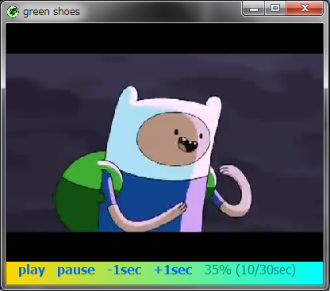

The Green Shoes Manual 1.1.354
Video
Green Shoesは埋め込みのMP4, AVI, WMV, QuickTimeや他の様々な人気のある ビデオフォーマットをサポートしています。これはすべてRuby/GStreamerのおかげです。 Shoes::Videoオブジェクトをセットアップするためにvideoメソッドを利用してください。 
Shoes.app width: 400, height: 300 do
background gold..cyan, angle: 90
space = ' ' * 3
v = video 'http://is.gd/xZ6Jih'
links = para space,
link('play'){v.play; links.move(0, 300)},
space, link('pause'){v.pause},
space, link('-1sec'){v.time -= 1000},
space, link('+1sec'){v.time += 1000},
top: 250
msg = para left: 250, top: 300
every do
msg.text = fg("#{(v.position*100).to_i}% " +
"(#{v.time/1000}/#{v.length.to_i/1000}sec)",
darkcyan)
end
end
ビデオフォーマットに加えて、MP3、WAVとOgg Vorbisのような、いくつかの オーディオフォーマットもサポートされています。
ビデオを非表示します。既に再生しているなら、ビデオは再生を続けます。 これはビデオの表示をオフにするだけです。このメソッドの有力な使い方の１つは、 MP3のようなオーディオファイルを再生するときに、ビデオの範囲を破壊することです。
注意: 今のところGreen Shoesではhideメソッドをサポートしていません。
ミリ秒でのビデオ全体の長さです。ビデオがまだロードされていない場合はnilを返します。
（left, top）はビデオの左上の角であり、特定の座標にビデオを移動します。
注意: 今のところGreen Shoesではmoveメソッドをサポートしていません。
ビデオが再生されていれば、一時停止します。
ビデオを現在再生していれば、trueを返します。または、ビデオが一時停止されていたり 停止されている場合はfalseです。
既に再生いなければ、ビデオの再生を開始します。既に再生いるのなら、ビデオは 始めから再度開始します。
（0.0）から（1.0）の間の10進数の（Floatの）数によるビデオの位置です。 例えば、0.5のFloatの値はビデオの中間の位置を示します。
Floatの値を利用してビデオの位置を設定します。 25%の位置にビデオを移動するなら：@video.position = 0.25。
ビデオをスロットから取り除きます。なおビデオを停止します。
注意: 今のところGreen Shoesではremoveメソッドをサポートしていません。
hide()メソッドによって非表示にされていたなら、ビデオを表示します。
注意: 今のところGreen Shoesではshowメソッドをサポートしていません。
ビデオが再生されていれば、停止します。
ビデオのミリ秒での時間の位置です。そのため、そのビデオが10秒の再生時間なら、 このメソッドは10000の数を返します
ミリ秒の時間でビデオの位置を設定します。
ビデオの可視性をトグルします。ビデオが表示されていれば、hideが呼ばれます。 そうでなければ、showが呼ばれます。
注意: 今のところGreen Shoesではtoggleメソッドをサポートしていません。
Next: AndSoForth